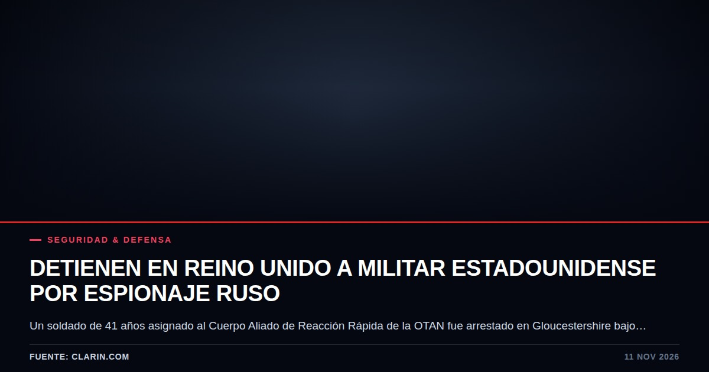
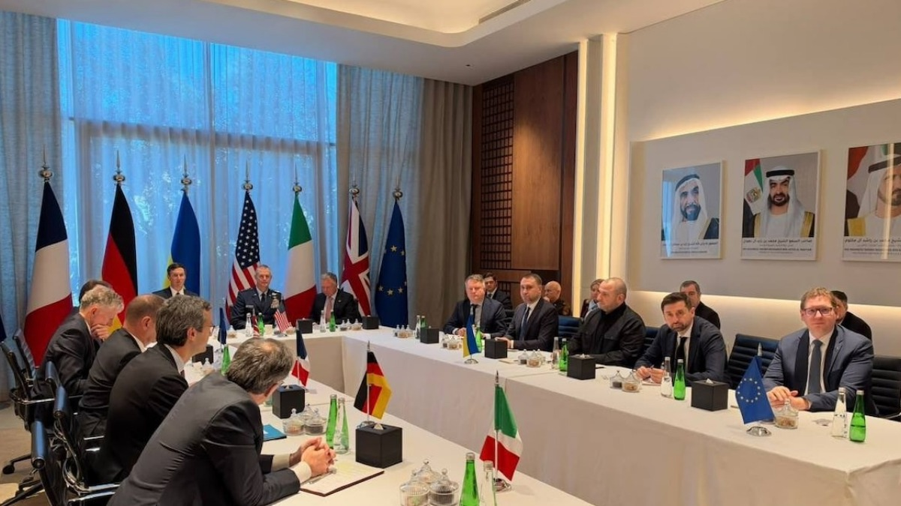
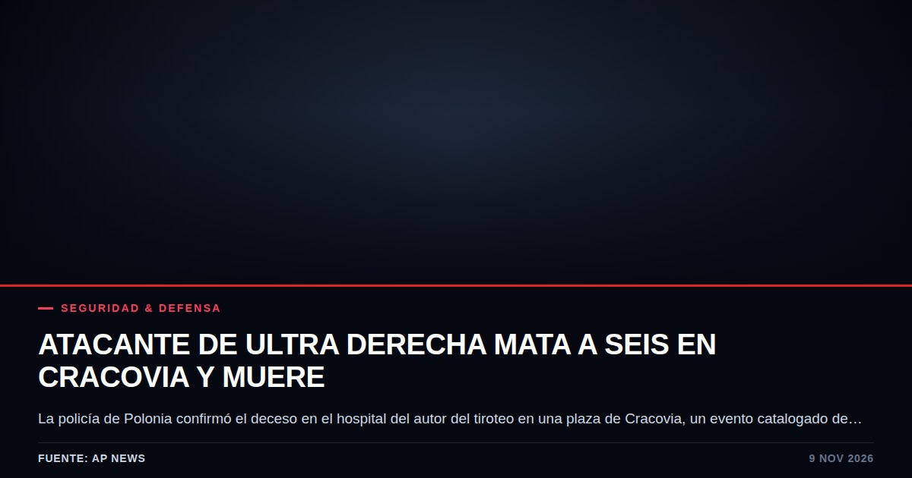
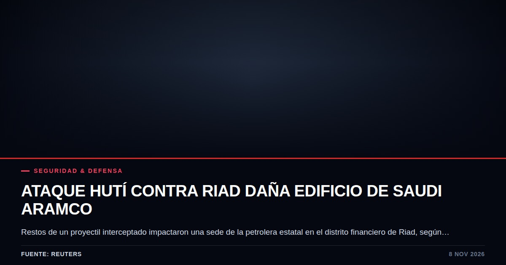
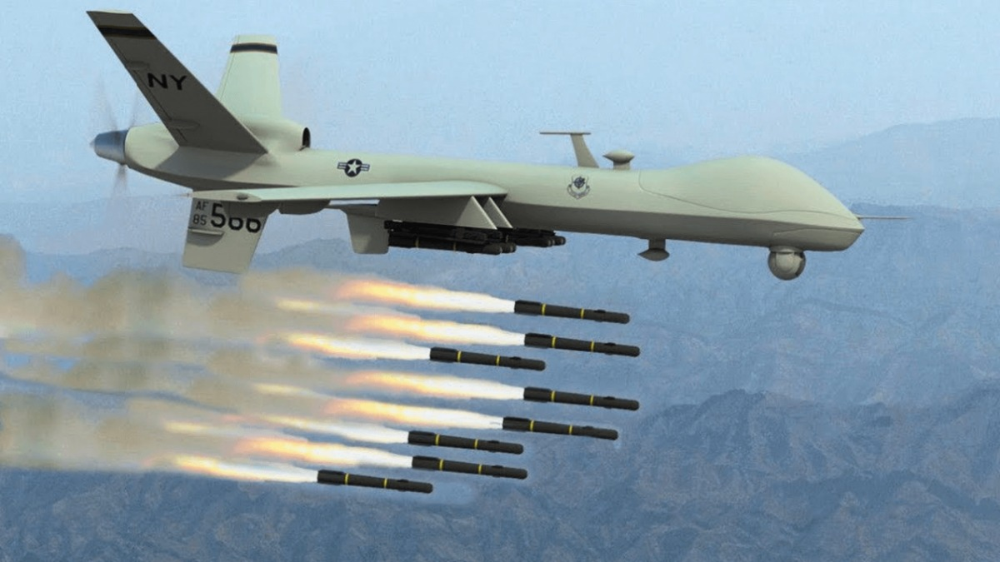
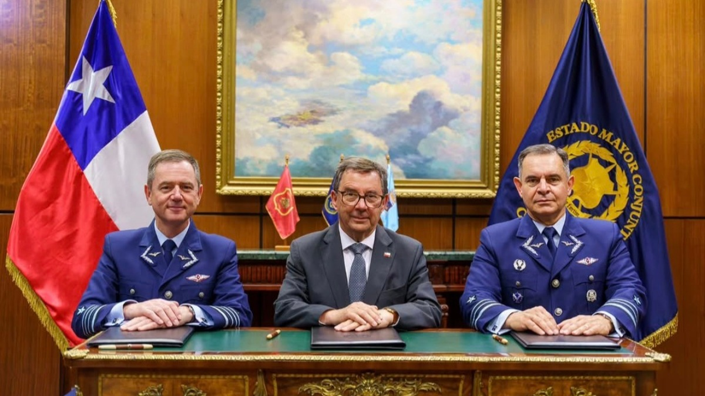
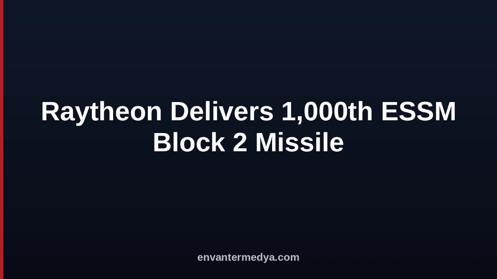
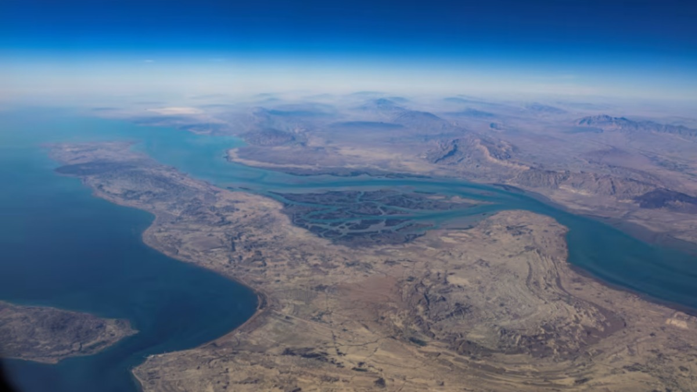
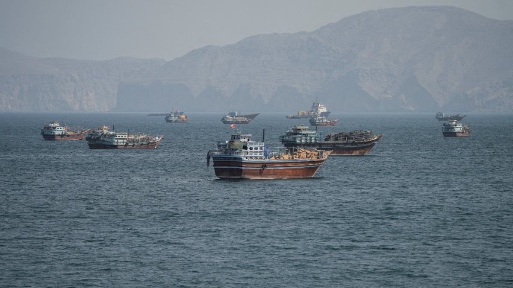
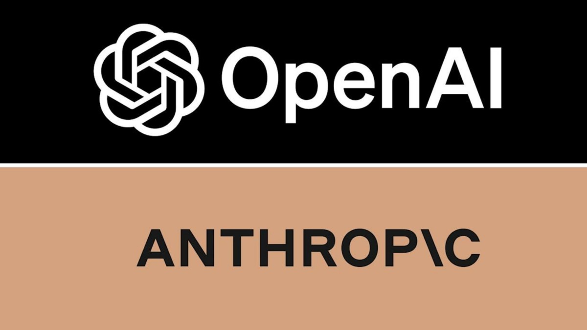

Seguridad & Defensa

Seguridad & Defensa
Arresto de militar estadounidense en suelo británico expone fisuras en la inteligencia de la OTAN
La detención de un efectivo de 41 años acusado de espiar para Rusia reabre el debate sobre la seguridad en las bases aliadas. El caso involucra al mando de reacción rápida y se produce a pocos kilómetros del GCHQ.
Más de Seguridad & Defensa
La presión demócrata sobre la política exterior y los límites del mandato popular frente a Irán
Un sondeo reciente expone la exigencia ciudadana de frenar el conflicto con Irán, mientras el Congreso evalúa herramientas para presionar al ejecutivo.

Seguridad & DefensaOccidente blinda el rol central de la OTAN ante el inminente escenario de posguerra en Ucrania
Aliados europeos, Estados Unidos y Ucrania se reunieron en Abu Dabi para fijar una postura común antes de las negociaciones con Moscú. El objetivo central es mantener a la Alianza Atlántica como el pilar absoluto de la seguridad europea.

VIDEOSeguridad & DefensaEl tiroteo en Cracovia expone las brechas de inteligencia ante la extrema derecha
La muerte en el hospital del agresor que mató a seis personas en una plaza cierra la investigación judicial directa. El hecho vulnera la percepción de estabilidad en una de las ciudades más transitadas de Polonia.
La muerte del atacante de Cracovia deja vacíos de inteligencia en Polonia
El fallecimiento bajo custodia policial del sospechoso de la matanza en Cracovia cierra la vía de interrogatorio directo. Las autoridades polacas investigan nexos con la extrema derecha tras el hallazgo de otros tres cadáveres.
La estrategia detrás de la pausa de Trump ante Irán
El expresidente estadounidense condicionó una ofensiva militar al avance de las negociaciones, revelando un cálculo pragmático sobre los riesgos de una conflagración abierta.

Seguridad & DefensaAtaque en Riad expone las grietas defensivas del corazón financiero de Saudi Aramco
Caída de restos de proyectiles en la capital saudí revela la persistente vulnerabilidad de la infraestructura corporativa frente al armamento asimétrico. Las autoridades reportan contención, pero la seguridad estratégica del mayor exportador de petróleo vuelve a ser cuestionada.

Seguridad & DefensaDrones MQ-9A Reaper en Colombia: vigilancia prolongada y el peso de la inteligencia compartida
El arribo de tres plataformas estadounidenses a Tolemaida fortalece el rastreo del narcotráfico en la región. Sin embargo, el esquema de préstamo expone los límites de la soberanía operativa colombiana.
Rusia confirma su delegación para negociaciones trilaterales con Estados Unidos y Ucrania en Abu Dabi
El Kremlin oficializó la composición del equipo que representará a Moscú en los Emiratos Árabes Unidos. El trasfondo revela una estrategia para priorizar el diálogo con Washington.
La trinchera de Hegseth: defensa férrea de Irán y fractura abierta en el Partido Republicano
Pete Hegseth resiste en el Pentágono y justifica la ofensiva contra Irán, mientras crecen las presiones en el Congreso para destituirlo tras el costo electoral en las elecciones de mitad de mandato.

Seguridad & DefensaMáximo Venegas asume el liderazgo del Estado Mayor Conjunto chileno en plena renovación operativa
El general de Aviación toma el mando de las operaciones conjuntas tras la designación del Ejecutivo. Su gestión estará marcada por la presencia territorial de las tropas y renovaciones clave de equipamiento.
Moscú minimiza el giro legislativo en Washington y blinda las negociaciones de Abu Dabi
Tras la victoria del Partido Demócrata en el Congreso estadounidense, el Kremlin asegura que su estrategia exterior no cambiará. Las conversaciones de seguridad programadas en Emiratos Árabes continúan según lo previsto.
Occidente diseña la reconstrucción financiera de Ucrania mientras Bruselas pierde terreno diplomático
La Unión Europea, Estados Unidos y la OTAN han debatido en Bruselas los instrumentos económicos para la posguerra ucraniana. El movimiento coincide con la preparación de negociaciones trilaterales en Abu Dabi donde la diplomacia europea no tendrá asiento directo.

Seguridad & DefensaEl misil mil del programa ESSM Block 2 evidencia las tensiones industriales de la OTAN
Raytheon proyecta fabricar 65 interceptores navales al mes en Arkansas para reducir las listas de espera aliadas. Sin embargo, la alta concentración fabril en suelo estadounidense plantea interrogantes sobre la resiliencia logística del consorcio.
Reino Unido integra a Chile en su régimen preferencial de exportación de tecnología militar
La actualización de la licencia general británica reduce la carga burocrática para las fuerzas armadas chilenas, abriendo el camino a nuevos contratos industriales con el astillero Babcock International.

VIDEOSeguridad & DefensaEstados Unidos bombardea la isla iraní de Qeshm tras el colapso diplomático en Qatar
Las operaciones calificadas como ataques defensivos limitados por Washington reabren la tensión armada en el estrecho de Ormuz. La incursión coincide con el abandono de las negociaciones por Teherán y el horizonte electoral norteamericano.
Sabotaje a la cadena de frío: cuando los refrigeradores de supermercados en Europa se convierten en blancos vulnerables
Un ciberataque simultáneo en siete países europeos elevó la temperatura de los congeladores comerciales hasta destruir millones de euros en alimentos, dejando al descubierto los peligros de la automatización remota.

Seguridad & DefensaIrán condiciona la reapertura del estrecho de Ormuz a la aceptación de exigencias por parte de Washington
Teherán redujo a dos días el plazo para liberar la ruta de hidrocarburos si Estados Unidos acepta levantar sanciones y reducir su presencia militar. Las negociaciones indirectas en Doha ocurren bajo un nuevo liderazgo y en la antesala de los comicios legislativos estadounidenses.

Seguridad & DefensaSilicon Valley asume el control de la infraestructura cívica con salas de crisis electorales
OpenAI y Anthropic inauguraron centros de operaciones dedicados a vigilar el comportamiento de sus chatbots ante las elecciones de Estados Unidos. Esta intervención consolida un cambio estructural donde empresas privadas gestionan la estabilidad informativa y el arbitraje democrático.
Caída de avión ejecutivo en West Palm Beach reabre debate sobre seguridad aérea
Un Learjet 60 con nueve personas a bordo se estrelló tras perder más de 8.000 metros de altitud en solo un minuto. La NTSB encabeza la investigación para esclarecer las causas de este desastre en la aviación privada.